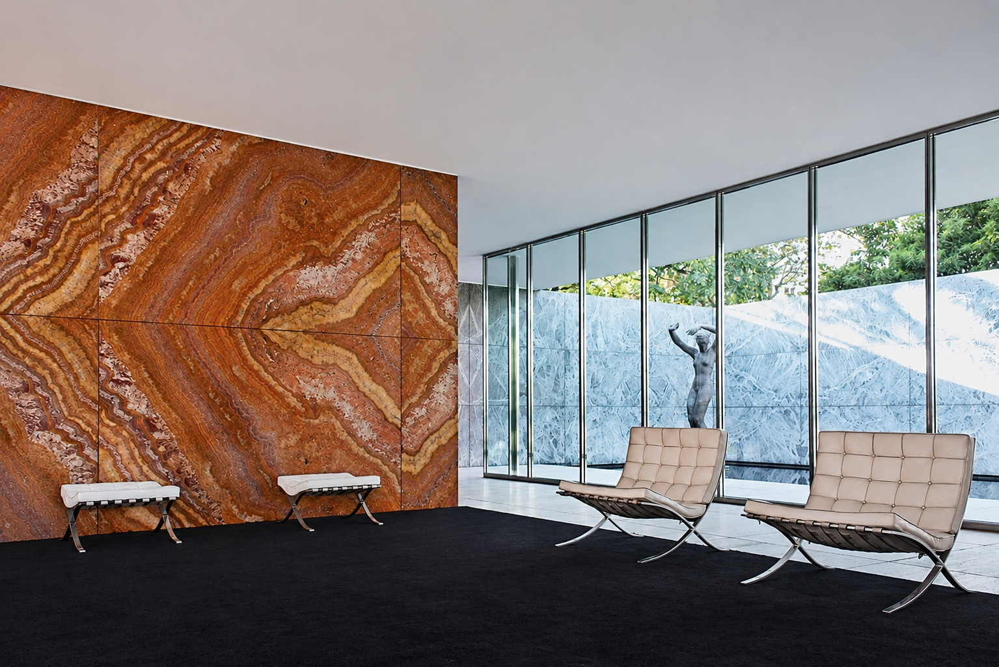
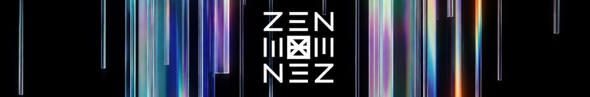
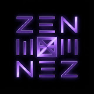
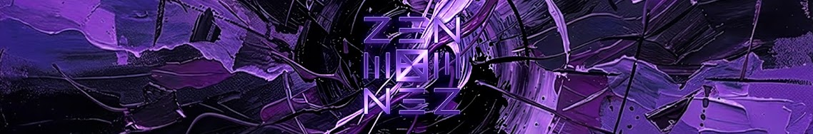
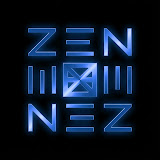
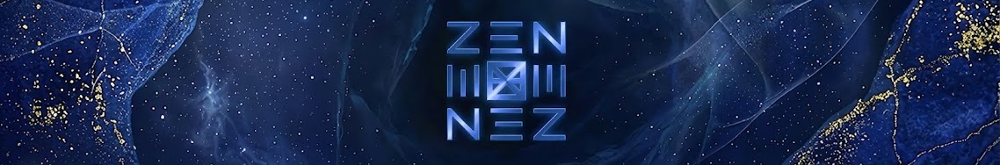

CREATORクリエイター

XEN | CREATIVE STUDIO JAPAN
Creative Director & Designer
- HEIGHT
- 180 cm
- BIRTHDAY
- MAY 10
- BASED IN
- TOKYO
- FROM
- CHIBA
ABOUT人物紹介
建築の構成力とエンターテインメントの演出力を融合し、映像・PV・写真・音楽・絵本・空間など、多層的なクリエイティブを展開。XEN | CREATIVE STUDIO JAPAN として、世界観設計から作品制作までを手がけている。
CREATIVE ORIGIN創作の原点

一脚の椅子から、建築の世界へ。
幼い頃から絵を描くことが好きで、将来は画家になることを夢見ていた。将来の進路を考えるなかで、画家として生計を立てることの難しさを意識し、同じ芸術分野である建築に目を向けた。当時、インテリアを見ることが好きだった。なかでも強く惹かれたのが、バルセロナチェアのデザイン。その作者を調べたことで、ドイツの建築家ミース・ファン・デル・ローエを知った。一脚の椅子との出会いが、建築への興味を深めるきっかけとなった。
BACKGROUND経歴
CREATIVE DEVELOPMENT活動の広がり
画像から各作品ページへ移動できます。スライドショーはポインターを重ねるかキーボードで選択すると停止します。選択中にスペースキーで停止状態を切り替えられます。
- 01
ARCHITECTURE
- 02
SPACE DESIGN
- 03
CREATIVE EXPANSION
創作領域の拡張
- 04
VISUAL STORYTELLING
視覚表現への展開
- 05
MULTIDISCIPLINARY CREATION
複合的な創作活動


XEN CSJ
建築設計を通じて、光と影、構造の美しさを理解。
エンターテインメント業界では、多様な人の感情や心地よさを学び、“魅せる表現”の基礎を体得する。
それぞれの経験を重ね、XEN CSJとして、世界観設計から作品制作までを手がけている。
PHILOSOPHY創作への想い
頭の中にあるものを少しずつ形にしていく。
映像、音楽、デザイン、物語。表現の方法は違っても、ものづくりを楽しむ気持ちは変わらない。ひとつの分野にとらわれず、興味を持ったことに挑戦し、自分らしい作品を生み出していく。
CREATIVE FIELDS活動領域
EDITORIAL INDEX 選択すると活動内容と作品を表示
02MUSIC楽曲制作
作詞・作曲・BGM制作
03Designグラフィック
ロゴ・グラフィック・ブランディング
04Characterキャラクター
キャラクター・イラスト
08ART GALLERYアートギャラリー
アートワーク・創作作品
09SNSSNS運用
SNS運用・企画・分析
10WebWeb制作
Webサイト・UIデザイン
LATEST VIDEOS
YOUTUBE最新の映像作品
YOUTUBE CHANNELS公式チャンネル
01
 XENVLOG / TALK / FILM
XENVLOG / TALK / FILM

XEN｜VLOG / TALK / FILM
@XEN_CSJ
企画、対話、映像、日常。
好奇心から生まれる体験や、日々の中で見つけた発見を、自分自身の視点で記録し、表現しています。
Vlogやトーク、映像作品を通して、XENの感性や価値観を届けるメインチャンネルです。
VIEW CHANNELYouTubeチャンネルを見る02 XEN | AMBER TALESSTORY / ANIMATION
XEN | AMBER TALES
@XEN_AMT
心の深淵に灯をともす、琥珀色の物語。
デザイン、音、物語をひとつの世界観に束ね、短編アニメーションを通じて、日常に埋もれた感情や小さな発見を描く創作プロジェクト。
VIEW CHANNELYouTubeチャンネルを見る
03

XEN | PURPLE AWAKEMUSIC / ELECTRONIC

XEN | PURPLE AWAKE
@XEN_PAW
言葉にならない衝動に、音の輪郭を。
デザイン・映像・電子音楽を融合し、Emotional Future Bassを中心に、内面にある感情や衝動を表現する音楽プロジェクト。
VIEW CHANNELYouTubeチャンネルを見る
04

XEN | BLUE SLEEPAMBIENT / RELAXATION

XEN | BLUE SLEEP
@XEN_BLU
止まらない思考を、深い青へと融解させる。
睡眠・集中・リラックスをテーマに、音と映像を通して、心身を整えるための静かな時間を届けるサウンドプロジェクト。
VIEW CHANNELYouTubeチャンネルを見るPERSONAL趣味・ライフスタイル
Fitness
筋トレ
Photography
カメラ・写真
Art & Culture
美術館・映画
Lifestyle
サウナ・アウトドア
CONCEPT PROJECT未来の構想
創ってきた世界観を、“空間そのもの”として体験できる形へ。それが、光と映像が変化する呼吸する建築である。
XEN FREQUENCY LOUNGE建築プロジェクトの詳細・作品を見る
呼吸する建築


XEN FREQUENCY LOUNGE
XEN FREQUENCY LOUNGE は、“周波数を体験する”をコンセプトに設計された、カフェ × バー × アート空間のハイブリッド施設。外観はコンクリートとSUSの質感を基調とし、XENロゴが象徴的に浮かび上がるミニマルなファサード。内部に一歩入ると、光・映像・音がゆるやかに変化する没入空間が広がる。空間は時間と共に表情を変える。
DAY MODE


自然光に呼応するように、空間全体が青・ターコイズ・ホワイトの寒色へシフト。水面・霧・風をモチーフにした抽象映像がモニターに流れ、天井の小さな星光が上品に揺らめく。深呼吸できる静寂の時間を提供し、カフェとして機能する。
NIGHT MODE


夜が訪れると、空間は昼の透明感をそっと手放し、光はゆっくりと温度と色を変えながら、別の表情へ移行する。光と音が段階的に重なり合い、“夜ごとに異なる物語が立ち上がる場所”として機能する。
アートギャラリー


撮影スタジオ、アパレル、アートギャラリーとして利用できる多機能空間。ミニマルな構成が、それぞれの用途に合わせて静かに表情を変える。
アフターパーティー

特徴的な建築デザイン
壁上段はSUS鏡面パネルで構成し、空間を拡張させる反射設計。天井にはランダム配置された5種サイズのシルバー球体。星のような照明が150点以上点在し、幻想的なグラデーションを形成。カウンターはセンターで発光し、昼夜で色調が変化。抽象映像 × 建築の融合により、“空間そのものが呼吸する”体験を実現。
CONCEPT
“世界観の中に入る建築”。XENが掲げる“周波数（FREQUENCY）”を、光・音・素材・動きで空間そのものへ変換するプロジェクト。日常と非日常の境界をほどき、来訪者に“ひとつの作品の中にいる感覚”を提供する。